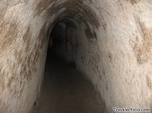

Architektur
Ben Thanh Markt
Im Inneren des Ben Thanh Marktes, das sich im Zentrum von Ho Chi Minh Stadt befindet, herrscht Trubel und es ist immer etwas los. Du kannst dort auch die eine oder andere vietnamesische Köstlichkeit probieren neben den vielen Verkaufsständen. Der Markt ist eines der frühesten erhaltenen Bauwerke.

Notre Dame Kathedrale
Schräg gegenüber der Hauptpost befindet sich ein weiteres Wahrzeichen der Stadt aus dem Jahr 1833. Sie wurde vom Papst offiziell zu einer Basilika ernannt und gilt heutzutage als ein Meisterwerk der städtischen Architektur.

Hauptpostamt
Dieses Gebäude ist wie viele der Stadt im französischen Kolonialstil gehalten. Das Design stammt von Gustave Eiffel, der auch den Eiffelturm in Paris entworfen hat. Eintritt wird hier nicht verlangt.

Das ehemalige Rathaus
Ein weiteres prächtiges Gebäude im französischen Kolonialstil ist das ehemalige Rathaus von Ho Chi Minh City. Davor befindet sich eine Statue von Ho Chi Minh.

Cu Chi Tunnel
Zwar sind diese etwa 70km von Ho Chi Minh Stadt entfernt, jedoch lohnt sich dieser authentische Rundgang. Die Tunnel wurden vom Vietcong während des Krieges benutzt, um sich zu verstecken.
